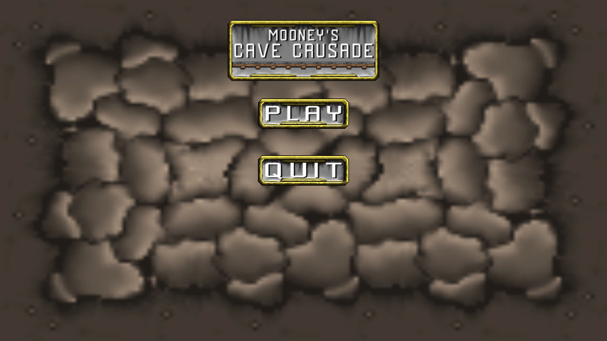
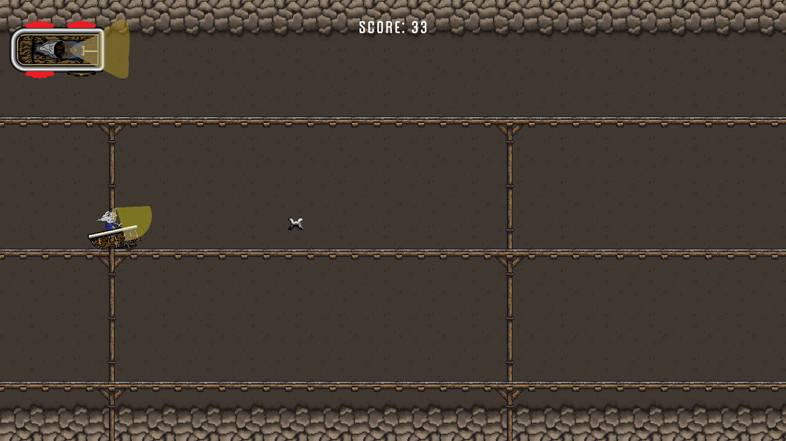

INFORMATION
Mooney's Cave Crusader was a project for a first-year university assignment. The assignment was to produce a game prototype in a group of two designers, two artists, and myself as the sole programmer. It was a terrific method to practise cooperation, communication, and other skills, and we made it highly effective by conducting SCRUM meetings each week to discuss ideas, mechanics, and other aspects of the project itself. Using this in conjunction with Trello boards and group chats was quite useful in completing the project on schedule and in a good manner.